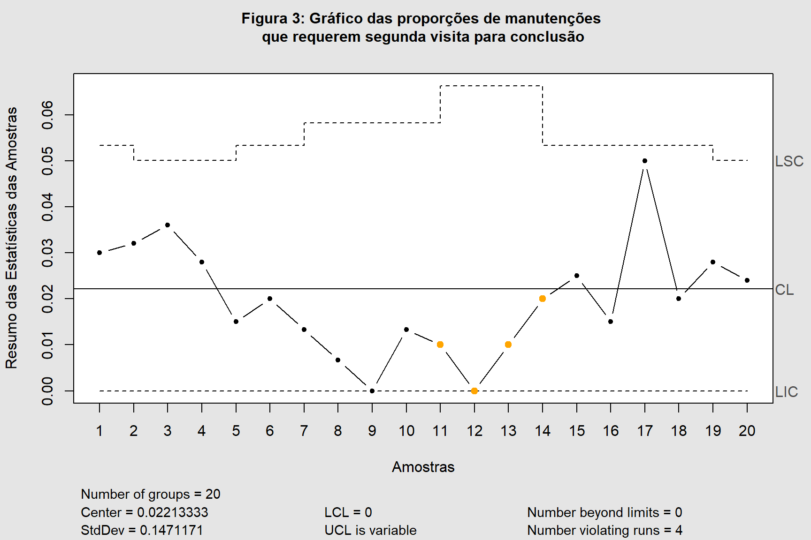
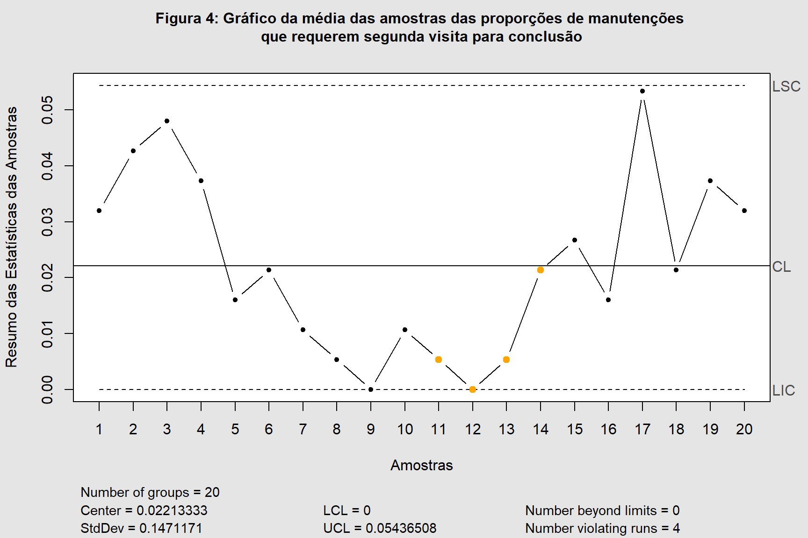
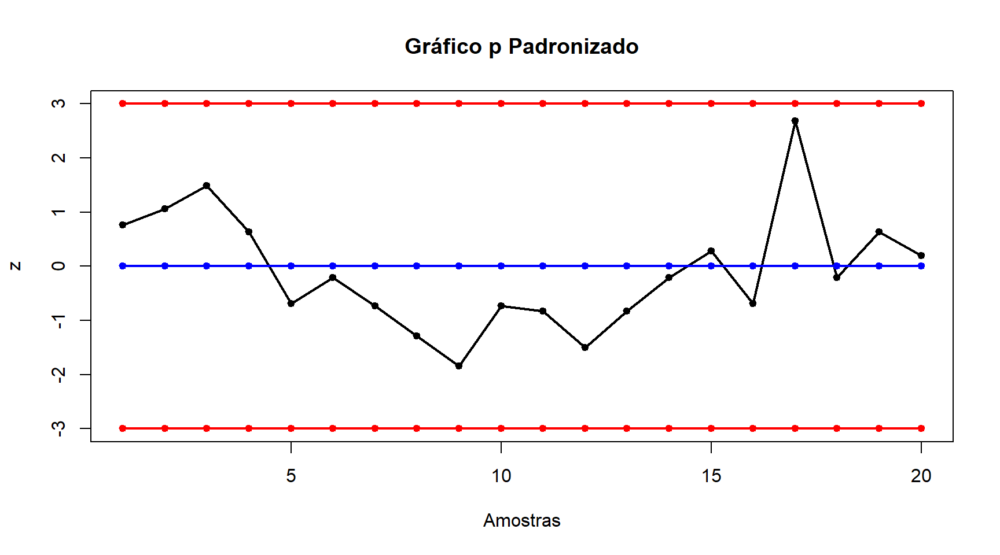
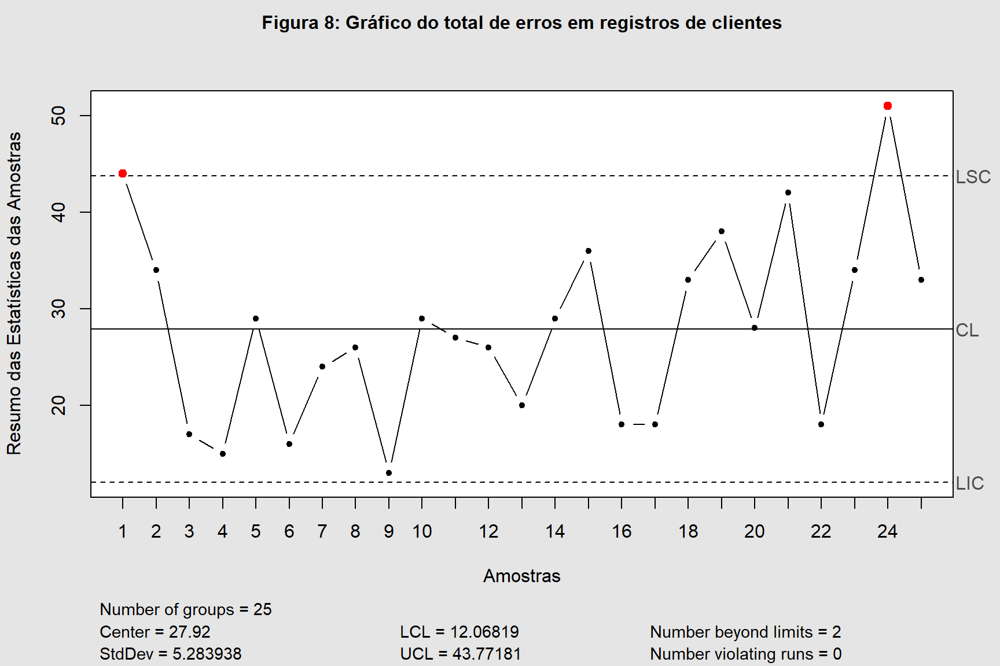

Em uma fábrica de sapatos, 200 pares são analisados diariamente. Nos 25 dias úteis de um mês foram registrados os números de pares defeituosos mostrados na tabela abaixo.
Estabeleça um gráfico de controle para monitorar a produção futura. Considere 𝑝 = 0,05.
Qual o menor tamanho de amostra que pode ser usado para esse processo e ainda fornecer um limite inferior de controle positivo para o gráfico?
Tendo em vista o cenário inicial, aquele em que não se remove nenhuma informação a fim de avaliar o comportamento dos dados quanto aos limites de controle, se construiu a Figura 1.
Mostrar Código
x =c(9, 11, 14, 9, 16, 11, 10, 12, 5, 10, 9, 11, 7, 9, 22, 11, 8, 11, 9, 13, 9, 7, 9, 8, 12)p =0.05qcc::qcc(x, type ="p", sizes =200, plot = F, center = p)|>plot(label.limits =c("LIC", "LSC"), xlab ="Amostras",ylab ="Resumo das Estatísticas das Amostras",title ="Figura 1: Gráfico das proporções de itens defeituosos")
É possível constatar, na Figura 1, a quebra do limite superior na amostra de número 15, para o cumprimento dos requisitos da questão, se removeu a informação que gerou o erro a fim de se avaliar o comportamento do processo sem a informação que gerou o erro, sendo retratado na Figura 2.
Mostrar Código
qcc::qcc(x[-15], type ="p", sizes =200, plot = F, center = p)|>plot(label.limits =c("LIC", "LSC"), xlab ="Amostras",ylab ="Resumo das Estatísticas das Amostras",title ="Figura 2: Gráfico das proporções de itens defeituosos sem a \ninformação discrepante")
Após a remoção da informação discrepante, o processo permaneceu sob controle, sendo este o gráfico adequado para o monitoramento da produção futura.
O que se deseja é obter um valor mínimo de \(n\) (tamanho da amostra) tal que \(LIC > 0\)
\[
LIC = p + 3\sqrt{ \dfrac{p(1-p)}{n}} > 0
\]
Substituindo \(p = 0,05\) e realizando os algebrismos necessários, tem-se:
\[
\Rightarrow n = \dfrac{0,0475}{\Bigg(\dfrac{-0,05}{3}\Bigg)^2} \therefore n = 171
\]
Baseado no valor de \(n\) tal que \(LIC = 0\), conclui-se que \(n = 172\) satisfaz o requisito solicitado.
Exercício 2
(Montgomery, 2013) A maintenance group improves the effectiveness of its repair work by monitoring the number of maintenance requests that require a second call to complete the repair. Twenty weeks of data are shown in the table below.
Find trial control limits for this process.
Design a control chart for controlling future production.
Analyze these data using an average sample size.
Construct a standardized control chart for these data.
Tradução
(Montgomery, 2013) Um grupo de manutenção melhora a eficácia de seu trabalho de reparo monitorando o número de solicitações de manutenção que requerem uma segunda chamada para concluir o reparo.
Vinte semanas de dados são mostradas na tabela abaixo.
Encontre os limites de controle de tentativa para este processo.
Projete um gráfico de controle para controlar a produção futura.
Analise esses dados usando um tamanho de amostra médio.
Construa um gráfico de controle padronizado para esses dados.
Em virtude de ter-se tamanhos desiguais do n° de solicitações de manutenção é necessário a utilização das médias ponderadas para obtenção da estimativa.
qcc::qcc(segunda_vis, type ="p", sizes = n, plot = F)|>plot(label.limits =c("LIC", "LSC"), xlab ="Amostras",ylab ="Resumo das Estatísticas das Amostras",title ="Figura 3: Gráfico das proporções de manutenções \nque requerem segunda visita para conclusão")

Mostrar Código
qcc::qcc(segunda_vis, type ="p", sizes =mean(n), plot = F)|>plot(label.limits =c("LIC", "LSC"), xlab ="Amostras",ylab ="Resumo das Estatísticas das Amostras",title ="Figura 4: Gráfico da média das amostras das proporções de manutenções \nque requerem segunda visita para conclusão")

Analisando a Figura 4 com base nas regras sensibilizantes se constata a existência de 10 pontos consegutivos abaixo da linha central, caracterizando uma mudança na média do processo.
Mostrar Código
pse=function(m,n,y) {if (length(n)==1){ p=sum(y)/(n*m);LIC=p-3*sqrt(p*(1-p)/n); if (LIC<0) LIC=0 LSC=p+3*sqrt(p*(1-p)/n) time=cbind(seq(1,m),seq(1,m),seq(1,m),seq(1,m)) w=cbind(y/n,rep(p,m),rep(LIC,m),rep(LSC,m))par(mfrow=c(1,1))matplot(time,w,type="o",pch=20,main="Gráfico p",col=c("black","blue","red","red"),ylab="p",xlab="Amostras", ylim=c(min(w),max(w)),lty=1,lwd=2) } else { p=sum(y)/sum(n);LIC=numeric(m);LSC=numeric(m);z=numeric(m)for (i in1:m){ LIC[i]=p-3*sqrt(p*(1-p)/n[i]); if (LIC[i]<0) LIC[i]=0 LSC[i]=p+3*sqrt(p*(1-p)/n[i]) z[i]=((y[i]/n[i]-p)/sqrt(p*(1-p)/n[i])) } time=cbind(seq(1,m),seq(1,m),seq(1,m),seq(1,m)) w1=cbind(y/n,rep(p,m),LIC,LSC) w2=cbind(z,rep(0,m),rep(-3,m),rep(3,m))# par(mfrow=c(1,2))# matplot(time,w1,type="o",pch=20,ylim=c(min(w1),max(w1)),# col=c("black","blue","red","red"),lty=1,lwd=2,# main="Gráfico p",ylab="p",xlab="Amostras" )matplot(time,w2,type="o",pch=20,ylim=c(min(w2),max(w2)),col=c("black","blue","red","red"),xlab="Amostras",main="Gráfico p Padronizado",ylab="z",lty=1,lwd=2) }}pse(m, n, segunda_vis)

Exercício 3
Num grande hotel, diariamente inspecionam-se 30 quartos quanto a falhas em sua arrumação. São apresentados os resultados (contagem de erros na arrumação de quartos) do acompanhamento ao longo de 30 dias.
Construa um gráfico do número de defeitos na amostra.
Faça uma análise e interpretação da estabilidade do processo.
(Adapted from Montgomery, 2013) The data in the table below are the number of information errors found in customer records in a marketing company database. Five records were sampled each day.
Set up a c chart for the total number of errors. Is the process in control?
Set up a Bell-c chart for the total number of errors. Is the process in control?
Discuss the findings from parts (a) and (b). Is the Poisson distribution a good model for these data? Is there evidence of this in the data?
Tradução
(Adaptado de Montgomery, 2013) Os dados da tabela abaixo são o número de erros de informação encontrados em registros de clientes em um banco de dados de uma empresa de marketing. Cinco registros foram amostrados a cada dia.
a) Monte um gráfico c para o número total de erros. O processo está sob controle? b) Monte um gráfico Bell-c para o número total de erros. O processo está sob controle? c) Discuta as conclusões das partes (a) e (b). A distribuição de Poisson é um bom modelo para esses dados? Há evidências disso nos dados?
registros = registros|> dplyr::mutate(total =rowSums(registros[,-1]) )qcc::qcc(registros$total, type ="c", plot = F)|>plot(label.limits =c("LIC", "LSC"), xlab ="Amostras",ylab ="Resumo das Estatísticas das Amostras",title ="Figura 8: Gráfico do total de erros em registros de clientes")

Conforme exposto na Figura 8 é possível constatar que o processo não está sob controle, para tanto foram removidos os totais de observações dos dias 1, 21 e 24 respectivamente (Figura 9), sendo necessário uma análise mais aprofundada para identificar causas de descontrole nos dias identificados.
Mostrar Código
qcc::qcc(registros$total[-c(1, 21, 24)], type ="c", plot = F)|>plot(label.limits =c("LIC", "LSC"), xlab ="Amostras",ylab ="Resumo das Estatísticas das Amostras",title ="Figura 9: Gráfico do total de erros em registros de clientes sem pontos de descontrole")